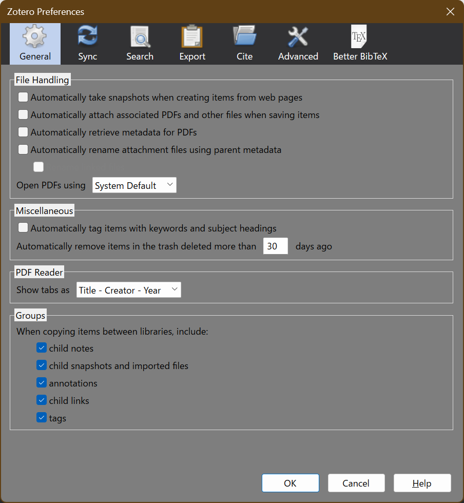
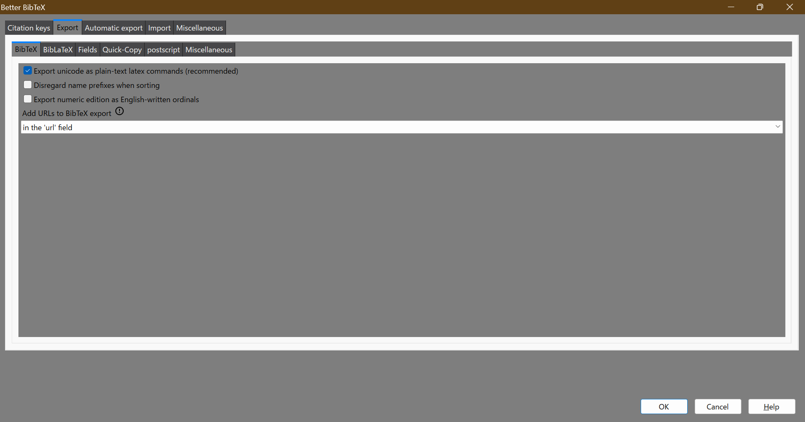

You can change the folder from here. (The settings is not appeared in this picture though.)
Zotero is one of the most important tools that I use. This application does so many things to organize documents, especially the technical papers. To maximize Zotero's potential, I tweak as many options as possible. I will share these settings and I hope some readers will refer to my options and to enjoy his study life.
Before we explain how to set up Zotero, you will need to download some components from the links below (For extensions, download the xpi file):
In my preferences, Google Drive is just as important as Zotero itself. We want to put the Drive folder under the User folder, for example "C:Users/(*folder name*)". (In my case, the folder name is itsuki.miyane. You do not need to copy it, of course). If the folder is not created in this location, you can assign it from the application's preferences. If you need to change the options, you will need to change the folder permissions property from Explorer. Once you have done the above, the Google Drive settings are complete.
You can change the folder from here. (The settings is not appeared in this picture though.)
The preliminary phase of the Zotero configuration process requires the creation of an account. This facilitates the synchronization of data across multiple devices, thereby obviating the necessity for repetitive operations on each device. Upon completion of this step, approximately half of the setup process is complete.
Anyway, before installing add-on's, you should go a preference and sync the account.
However, the options are not synchronized in this case. Therefore, several images have been included to illustrate the various configurations.

We will now introduce two significant extensions, Better BibTeX and ZotFile, which facilitate enhanced functionality within the Zotero ecosystem.
We will try installing BibTeX first. We have to take following steps:

We will also install zotero-inspire, which allows us to treat the Inspire-HEP citation key. We should install Better BibTeX the same way too. No special settings are needed since this is just an extension.
Once Better BibTeX is installed, we will start working on ZotFile. It loads the same way, so I will skip that. To change the ZotFile settings, click "Tool -> ZotFile Preference".
We can also change into the Dark mode by adding the add-on. You can download it from here, and follow the instruction of the repo. I think its explanation is very clear, so I will skip that.
Added: September 18th, 2024
New version Zotero 7 has been released, and its settings are different from the previous version. Moreover, ZotFile extension does not work properly now. Then we should use the previous, Zotero 6, and wait for the update of ZotFile. We can get that version from the same web page.